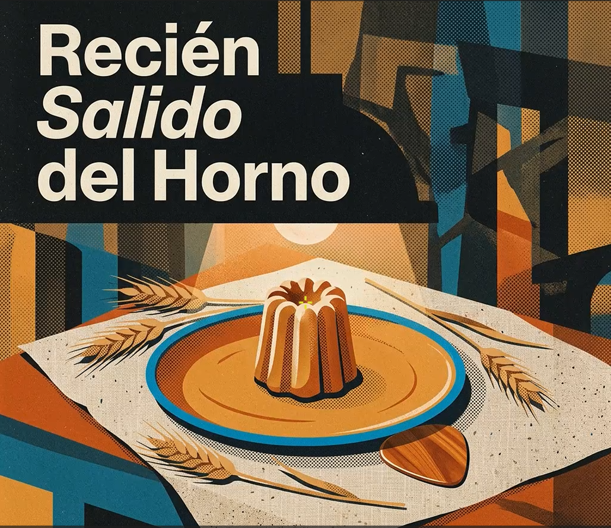
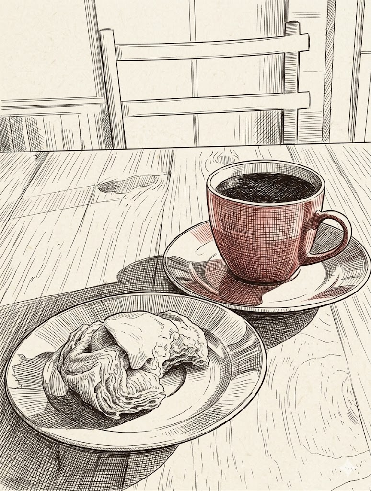
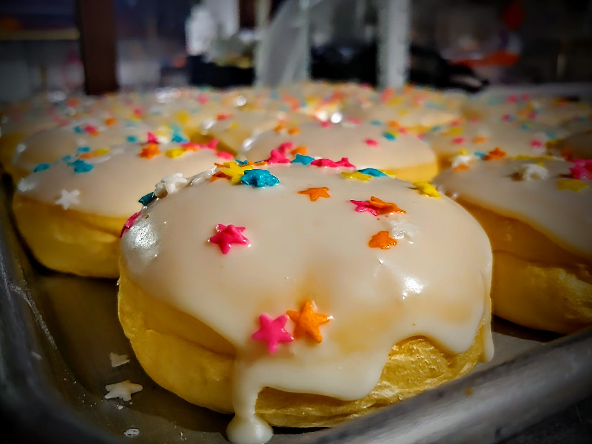

Nuestra Vitrina Virtual
Cada una de nuestras piezas es elaborada minuciosamente a mano de forma diaria. Explora nuestras especialidades.

Pan de Masa Madre

Hojaldres Tradicionales

Pastelería de Autor

Galletas Caseras